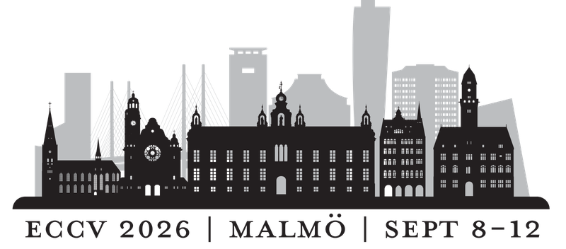
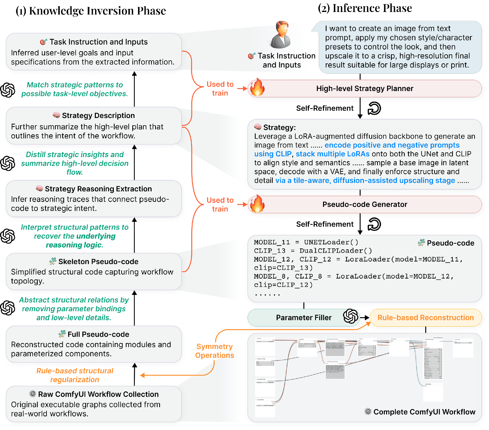

ECCV 2026 · Malmö · 8–12 September · PosterKnowledge-Centric Agents for Workflow Generation in ComfyUI
A plain task description in. A complete, executable ComfyUI workflow out. Generating a workflow is not text-to-JSON: it is reasoning over knowledge, its structure, its hierarchy and its dynamics.
Four real test-set tasks, each run through the agent: instruction → strategy → skeleton pseudo-code → reconstructed ComfyUI graph → output. Every artefact shown is the agent's actual output.
Why direct text-to-JSON generation fails
A ComfyUI workflow is a directed graph of model and operation nodes, stored as JSON. Building a good one by hand takes real expertise. Prior agents ask a language model to write that JSON directly, and it breaks for two separate reasons.
Strategic level: the knowledge is tacit
Workflow design is open-ended and experience-driven. Whether to segment, how to split branches, which control modules interact: designers rely on expertise that is simply not written down in ordinary text, so a model cannot pick it up from a text corpus.
Structural level: the graph is brittle
Workflows are large discrete graphs. One misconnected link or one inconsistent parameter binding, and nothing runs. Token-by-token JSON generation has no notion of the topology it is supposed to produce.
GPT-5, prompted zero-shot, scores zero on every metric of our test set. It never produces a runnable graph.Few-shot prompting, chain-of-thought, self-consistency and retrieval each help a little; the best of them passes 48% of tasks.
Model the knowledge, not the raw graph
We make expert knowledge explicit as a hierarchy of abstraction levels, learn only the transitions that genuinely require reasoning, and generate by running that same hierarchy backwards.
Invert
Abstract 912 curated real workflows bottom-up into an explicit knowledge hierarchy: full pseudo-code, skeleton, reasoning, strategy, and finally the task a user would have written.
Inject
Fine-tune exactly where reasoning is required: task to strategy, and strategy to skeleton. An auxiliary objective makes the model spell out why each design decision was taken.
Infer
At test time, run the hierarchy top-down: learned planner and generator first, then a parameter filler and a rule-based reconstruction that emits a real, executable graph, with self-refinement after each learned stage.

Left: knowledge inversion, bottom-up over 912 curated real workflows. Right: inference, the mirror image. The two red stages are the only learned components.
Learned only where reasoning is needed
| Transition | Why it is hard | Mechanism |
|---|---|---|
| Task → Strategy | Tacit expert experience | SFT |
| Strategy → Skeleton | Compositional graph construction | SFT |
| Skeleton → Full code | Pattern-driven completion | rule-based · no training |
Setup. Qwen3-14B with LoRA (r = 16, α = 32), trained on a single H200. GPT-5 is the underlying LLM for every method compared, including ours. Auxiliary objective: strategy reasoning extraction.
What inversion produces
A purely rule-based step converts each raw workflow into full pseudo-code, keeping every module, link and parameter. A language model then abstracts the values away, leaving skeleton pseudo-code: just the functional topology.
From the skeleton we recover strategy reasoning, traces explaining why the graph is organised this way, why two controls are fused, why face detailing comes after denoising. That is summarised into a concise strategy, and finally into the instruction a user would have written.
Running the hierarchy backwards
Four test-set tasks, every artefact the agent's actual output. Pick a task; hover a line of pseudo-code to find its node in the graph. Wires carry ComfyUI's own type colours.
Richer graphs that actually run
Our 30-task test set. All methods use GPT-5 as the underlying LLM. Pass and Resolve were scored by executing every generated workflow in ComfyUI by hand and inspecting the outcome.
All six metrics on the test set
VND distinct valid node types · NodeComp / LinkComp share of nodes correctly instantiated / correctly connected · TaskCons GPT-judged task fulfilment · Pass executes in ComfyUI · Resolve executes and fulfils the task. All in %, except VND.
Generalisation to external benchmarks
Hierarchy beats scale
A control experiment: train a larger Qwen3-32B end-to-end, straight from instruction to pseudo-code, with no intermediate strategy level.
Limitation. When a task needs a rare node type, the model tends to substitute a common one, which can break functional dependencies. We attribute this to limited coverage of rare nodes in the 912 training workflows; a larger, more diverse collection and reinforcement-style optimisation are the natural next steps.
Same instruction, every method
Baselines either fail to execute (✕) or silently drop part of the instruction, for example rendering the airship but stopping at 512 × 512 instead of upscaling. Click to enlarge.
BibTeX
@inproceedings{li2026knowledgecentric,
title = {Knowledge-Centric Agents for Workflow Generation in ComfyUI},
author = {Li, Zhendong and Sun, Lei and Ming, Ruibo and Zhang, He and Paudel, Danda Pani and Van Gool, Luc and Gu, Jinjin},
booktitle = {European Conference on Computer Vision (ECCV)},
year = {2026}
}